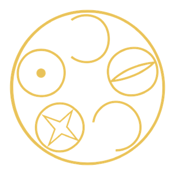

D·I·C·T·O — Dodecahedron, Icosahedron, Cube, Tetrahedron, Octahedron
DICTO
Geometric sculptor in Osaka using recycled PET
Modular systems: B1NR / DICTOspheres
Three apps, one geometry
KALEIDOHEDRA Moves the landscape: shear and slide whole lattices, every piece moving with them RHOMBIVERSE The landscape: space-filling lattices from 1D to 6D POLYHEDRAVERSE The portrait gallery: every shape, one at a time, up close New here? Try RHOMBIS, the 3D puzzle from RhombiverseDiscoveries
DICTO's findings, each checked exactly in code and archived on Zenodo (10.5281/zenodo.23173809), newest first.
- #16 Sunstar clustersSix dodecahedra round a Dogstar, a Sunstar turned inside out; with four round a corner, an octet network→
- #15 DICTO Jewel clustersFour and six DICTO Jewels, solid, each filling space with stella octangulas; shared, the octet truss→
- #14 DICTO-StarAn icosidodecahedron with 12 dodecahedra and 20 tridiminished icosahedra, closing exactly→
- #13 The 13-dodecahedron cluster made solidIts gaps as two exact pieces, wedges and needles, and separable once built→
- #12 Star Chain ReactionGreat star, Sunstar, great star, Sunstar, nested exactly, each step touching→
- #11 The stretched dodecahedronThe dodecahedron stretched along a cube-face axis: 8 regular pentagons and hexagons→
- #10 DICTO Jewel (EKP windows)12 Penrose rhombus windows; with stella octangulas it fills space→
- #8 Euclid–Kepler–Pacioli cell and networkAll five Platonic solids nested in one cell of a cubic lattice→
- #5 Regular-hexagon elongated dodecahedronFound independently (known: Grünbaum, 2010)→
- #1 DICTO skewed rhombic dodecahedronA space-filler of 60° and 72° rhombi, and its two elongated forms→
Work
- Kaleidohedra by DICTO on ZenodoShearable lattices, new space-fillers and the Euclid–Kepler–Pacioli (EKP) cell · always the latest version→
- RHOMBITUREAn extractable armature system for carving and modelling · doi:10.5281/zenodo.23173896→
- B1NR “Int-aerium & Ext-aerium”Sculpture · Fumin Hall ALTI, Kyoto→
- Design RegistrationDICTO’s registered designs→